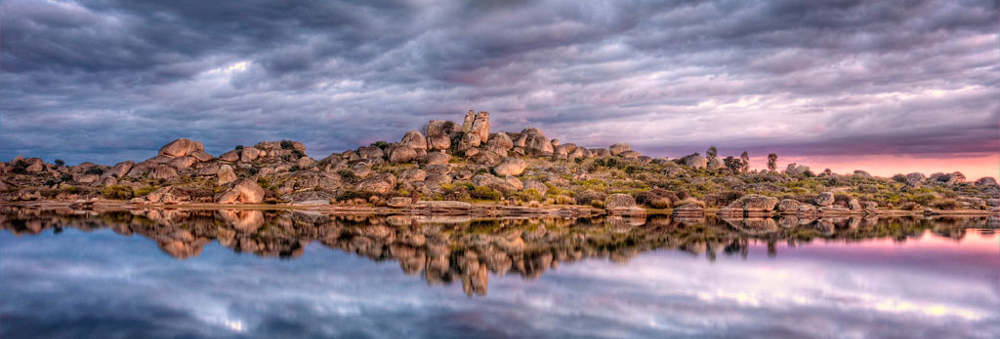
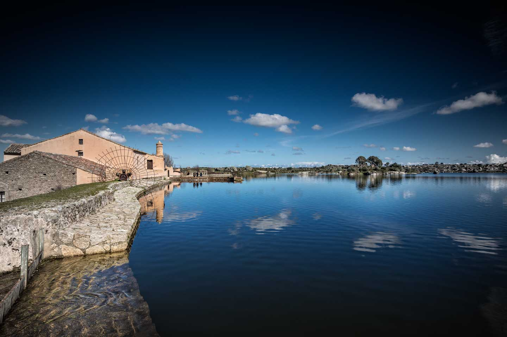

Ruta de los Sentidos
Monumento natural «Los Barruecos»

Atardecer en Los Barruecos
Malpartida se sitúa en la zona pseudoesteparia de los alrededores de Cáceres, un medio dominado por el llano que custodia importantes especies amenazadas como el sisón, la avutarda o el cernícalo primilla.
La afloraciones del batolito granítico sobre el que se asienta Malpartida proporciona al paisaje plano una serie de 'islas' donde la fauna y la flora encuentran un refugio que permite su presencia en todo el espacio. Este fenómeno se potencia con la existencia de charcas y pozos que aprovechan las cualidades de los suelos graníticos para almacenar agua, lo cual contrarresta los períodos de sequía estival y permite una explosión de vida natural que no puede menos que impresionarnos.
La mayor, y más sorprendente, de estas 'islas-refugio' lo constituye el Monumento Natural de Los Barruecos que presenta un paisaje espectacular dominado por grandes bolos graníticos, esculpidos por los agentes erosivos durante miles de años. Las caprichosas formas resultantes presentan el más extenso catálogo de modelado sobre granito, lo cual ha atraído la atención de geólogos y geomorfólogos de todo el mundo.
El paisaje se completa con la presencia de cuatro embalses históricos, en cuyas aguas se reflejan las formas graníticas creando la sensación de un paisaje ilusorio.
La conjunción del refugio proporcionado por las rocas y la abundancia de agua durante todo el año son también un excelente reclamo para la fauna y la flora. Al lado de los arbustos como los codesos (Adenocarpus complicatus) y la retama blanca (Citisus multiflorus) encontramos pies sueltos de encinas (Quercus rotundifolia), alcornoques (Quercus suber), piruétanos (Pirus bourguaeana) almeces (Celtis australis) acebuches (Olea europea) o sauces (Salix alba) agrupados éstos en las abundantes zonas húmedas.
La fauna es muy variada, encontrando ejemplares de rapaces que se desplazan a Los Barruecos atraídos por la abundancia de agua y alimento: podemos disfrutar reinando sobre el cielo del paraje de las siluetas del águila culebrera (Circaetus gallinatus), el águila calzada (Hieraetus pennatus) milano real (Milvus milvus)...

Charca del Barrueco de Abajo
Charca del Barrueco de Arriba
Como es lógico también abundan las aves acuáticas, como el ánade real (Anas platyrhynchos), el somormujo lavanco (Podiceps cristatus), la garza real (Ardea cinerea), el zampullín chico (Tachybaptus ruficolis). Sin olvidar el lagarto ocelado (Lacerta lepida), el galápago leproso (Mauremys caspica) o la nutria (Lutra lutra).
Por sus peculiaridades es especialmente significativa en el Monumento Natural de Los Barruecos la cigüeña blanca (Ciconia ciconia) y la tenca (Tinca tinca), esta última como especie con la que se repueblan las charcas para la práctica de la pesca deportiva entre mayo y septiembre, que está muy arraigada en la población. En cuanto a la colonia de cigüeña blanca tiene tal importancia que ha sido considerada la mayor de Europa en estado natural, anidando sobre los grandes bolos graníticos. La peculiaridad de la colonia de Los Barruecos, unida a la extensa colonia urbana asentada en la población y los esfuerzos del Ayuntamiento por la conservación de este ave y su hábitat, le valió a Malpartida de Cáceres el nombramiento de Pueblo Europeo de la Cigüeña en 1997, por el Fondo Patrimonio Natural Europeo (EURONATUR).
No podemos obviar que Los Barruecos es un paisaje antrópico, dónde la actividad humana ha sido decisiva desde tiempos prehistóricos. Testigo de ello son los abundantes yacimientos arqueológicos que prueban el aprovechamiento de las magníficas condiciones del paraje ya en el Paleolítico. Del Calcolítico se datan poblamientos amurallados y el conjunto de grabados y pinturas esquemáticas, durante la época romana se construye un poblado tardo romano -asociada a la colonia Norba Caesarina- y en sus inmediaciones conjuntos de tumbas antropomorfas.
Escalera cascada de los Barruecos de Abajo
El vídeo muestra una cascada artificial en forma de escaleras, por donde cae el agua proveniente de la charca de los Barruecos de Abajo. El agua desciende escalón por escalón, generando un efecto visual y sonoro relajante.